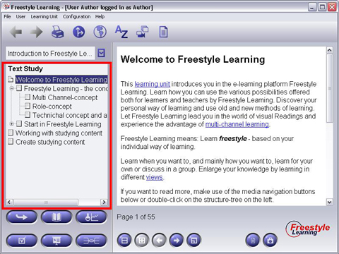

Once you have activated any Learning Unit View, in the left part of the screen you see all elements contained in this View listed in a tree-like structure, the Elements Structure Tree. The area containing this Structure Tree is called Structure Panel. When you select any Learning Unit View Element listed in the Structure Panel by a single mouse click, the corresponnding content will be shown in the right area, the Element Content Panel.

Back to Main Help Page